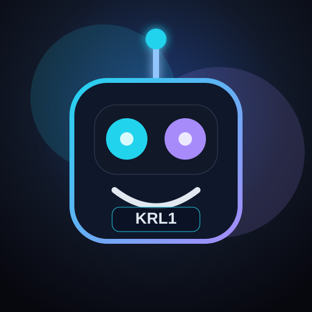

PM le jour, builder la nuit. Je construis des outils concrets avec l’IA parce que les meilleurs outils sont ceux qu’on crée soi-même. Test, apprends, itère. Chaque projet ici répond à un vrai problème que j’ai rencontré en tant que PM.
Je build des outils PM avec l’IA pour résoudre des vrais problèmes terrain, pas pour faire des démos. Stack : HTML/JS statique + proxy Cloudflare + orchestration LangGraph (planner + synthesis) avec fallback Groq. Le tout est déployé en open access sur GitHub Pages, sans clé API côté utilisateur.
Génère des OKRs produit structurés avec Key Results mesurables (métrique, milestone, santé) en quelques secondes.
Transforme un problème flou en hypothèses, questions d'interview et plan de test structuré.
Analyse des notes d'entretiens brutes et en extrait pain points, insights et un persona utilisateur.
Priorise un backlog en RICE ou MoSCoW avec scoring et justification par item en moins de 2 minutes.
Décompose un epic en user stories INVEST avec critères d'acceptance, exportables en Markdown.
Transforme des features en roadmap narrative avec pitch et messages clés adaptés à chaque audience.
